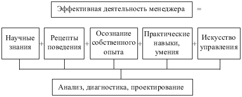

- ориентация на энергичное и быстрое действие;
- постоянный контакт с потребителем;
- предоставление людям определенной автономии, поощряющей их предприимчивость;
- ориентация на человека как главного источника повышения производительности труда и эффективности производства;
- наличие немногочисленного, но высококвалифицированного штата сотрудников.
- действенность – степень достижения целей организации (отношение результатов, кᴏᴛᴏᴩые достигнуты, к результатам, кᴏᴛᴏᴩые намечались);
- экономичность – соотношение необходимого и фактического расхода ресурсов;
- качество – ϲᴏᴏᴛʙᴇᴛϲᴛʙие характеристик товара (услуг) стандартам и требованиям потребителей;
- прибыльность – соотношение между доходами и суммарными издержками;
- продуктивность – соотношение объема товара (услуг) за определенный период в натуральных, стоимостных и других показателях и затрат ресурсов, ϲᴏᴏᴛʙᴇᴛϲᴛʙующих данному объему продукции (ресурсов: трудовых, материальных, финансовых и др.);
- качество трудовой жизни – условия труда работников;
- инновационная активность – результативность внедрения новшеств в различных функциональных областях деятельности организации: техническое переоснащение, производство, организация и т.д.
1. Показатель эффективности управления
Эу = П : Зу,
где П – прибыль организации; Зу – затраты на управление.
2.Коэффициент численности управленческих работников
Кч = Чу : Ч,
где Чу – численность работников управления; Ч – общая численность работников организации.
3. Коэффициент затрат на управление
Кз = Зу : 3,
где 3 – общие затраты организации.
4. Коэффициент затрат на управление на единицу выпускаемой продукции (оказываемых услуг)
Кзп = Зу : К,
где К – количество или объем выпускаемой продукции (оказываемых услуг).
Э.М. Коротковым предложена формула эффективной деятельности менеджера (рис. 2.12). Формула эффективной деятельности менеджера

Рисунок № 2.12. Формула эффективной деятельности менеджера